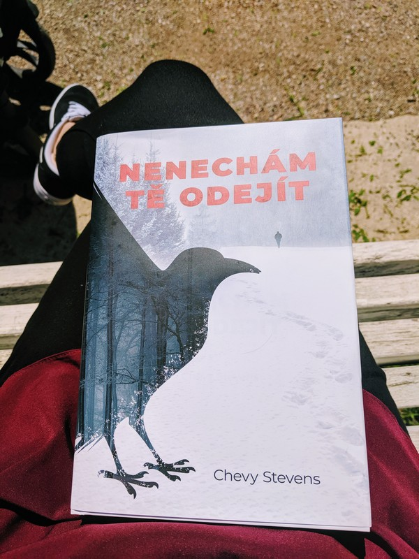

Po dlouhé době se mi do rukou dostalo něco skutečně mrazivého a zatraceně napínavého! Thriller Nenechám tě odejít, který mi zaslalo k recenzi knihkupectví Megaknihy.cz, sází na silné téma domácího násilí.
Hlavní hrdinka Lindsey v minulosti utekla spolu se svou dcerou Sophie od despotického manžela Andrewa. Po letech se opět postavila na vlastní nohy, vybudovala si nový domov, našla přítele… Život by běžel poklidně dál, kdyby se k ní nedonesla zpráva, že Andrew byl propuštěn z vězení a nezačaly se jí najednou dít děsivé věci. Vloupání do domu, otrávení psa, napadení přítele… po všech těchto zážitcích je víc než jasné, že Lindsey má ve svém okolí někoho, kdo se jí chystá ublížit. Je to však skutečně Andrew, kterého k Lindsey táhnou nevyřízené účty z minulosti, nebo za tím vším stojí někdo docela jiný?
Mrazivou přítomnost popisovanou samotnou Lindsey prokládají flashbacky do minulosti (v nichž líčí neméně hororové věci, kterých se na ní Andrew dopouštěl) a také kapitoly vyprávěné Lindseynou dospívající dcerou Sophií. Kniha má skvělý spád a její autorka mimořádný dar udržet čtenáře v napětí a nejistotě téměř až do finále, které celý příběh rozuzlí.
Mně osobně se podařilo pravdu odhalit jen pár stránek před Lindsey a možná mě závěr knihy svou nepravděpodobností i maličko zklamal, ale silný čtenářský zážitek mi to ani tak nepokazilo. Pokud hledáte knížku, která vám i v letních vedrech navodí husí kůži, Nenechám tě odejít je můj žhavý tip! Stupňující se napětí bez zbytečné omáčky okolo je zárukou, že vás kniha přibije do křesla, dokud nezjistíte, jak to celé dopadne.

Siesta, když dítě spí :)…